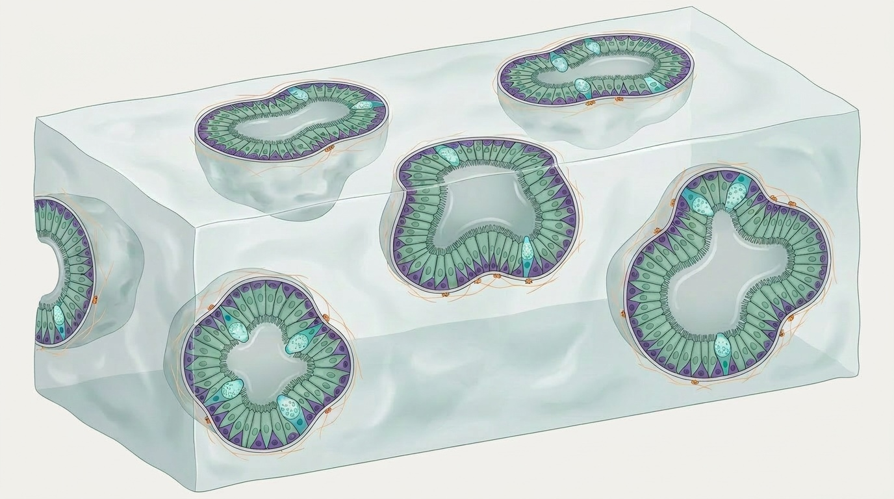

Airway organoids & in vitro models of the lung
Creating a model of the airway outside the body
Understanding how the human airway functions — and how it changes in disease — requires models that accurately recapitulate its biology. Animal models have provided important insights, but there are well-recognised differences between rodent and human respiratory biology that limit translation. Human cell models of the airway, including air–liquid interface (ALI) cultures and organoids, offer an important alternative.
Air–liquid interface cultures
The best-established in vitro model of the mucociliary airway epithelium is the air–liquid interface culture. In this system, airway basal cells are seeded onto a porous membrane support and submerged in culture medium until they form a confluent monolayer. The medium is then removed from the apical surface, exposing the cells to air. Over the following two to four weeks, this air exposure drives differentiation: basal cells generate ciliated cells and mucosecretory cells, producing a pseudostratified epithelium with mucociliary activity that resembles the human airway in vivo.
ALI cultures can be established from basal cells derived from donors with different disease backgrounds — including cystic fibrosis, COPD or primary ciliary dyskinesia — enabling direct comparison of healthy and diseased epithelia. They are widely used for studies of host–pathogen interactions, drug toxicity, and mucociliary function.
Organoids and tracheospheres
Three-dimensional organoid cultures provide a complementary approach. When airway basal cells are embedded in an extracellular matrix and cultured in the absence of a supporting surface, they self-organise into spherical structures — variously termed tracheospheres, bronchospheres, or simply airway organoids — that contain basal, ciliated, and secretory cells arranged around a central lumen.
The key advantage of organoid systems is that they capture aspects of the three-dimensional organisation and cell–cell interactions of the tissue of origin that are absent in flat, two-dimensional cultures. They are also amenable to quantitative assays — colony formation efficiency, organoid size, and ciliary beat frequency can all be measured systematically — making them well-suited to screens for compounds that modulate basal cell behaviour. We have used this approach to identify Wnt signalling pathway activators as pro-proliferative compounds in airway basal cells.
Our approach
At EpiCENTR, we use a combination of two-dimensional basal cell cultures, tracheosphere/organoid systems, and ALI cultures depending on the question being asked. We have developed lentiviral tools for studying airway epithelial differentiation that are compatible with these systems and available via Addgene. Our datasets from primary human airway basal cells are accessible via GEO.